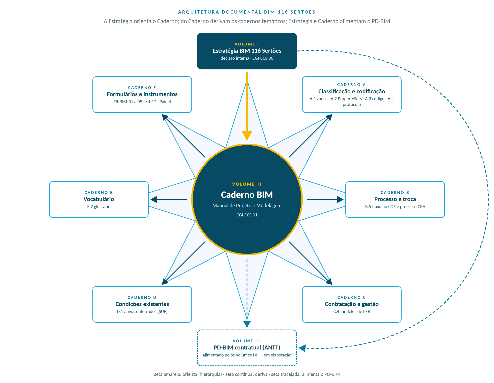
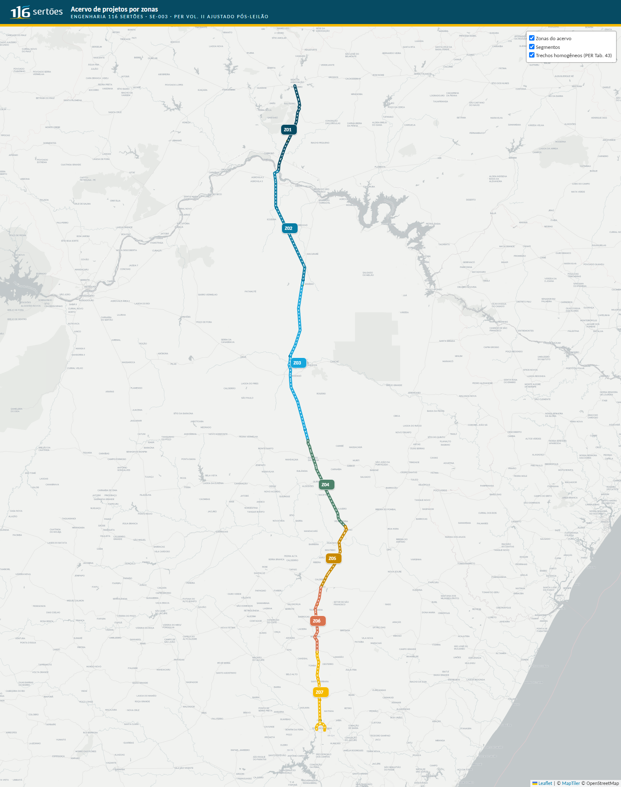
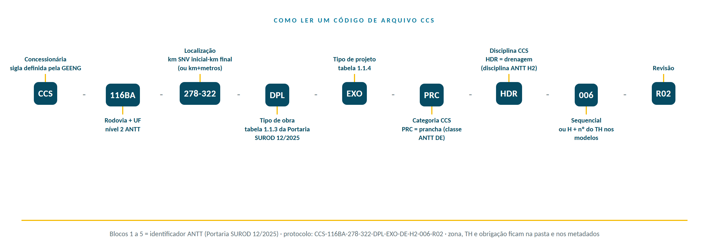
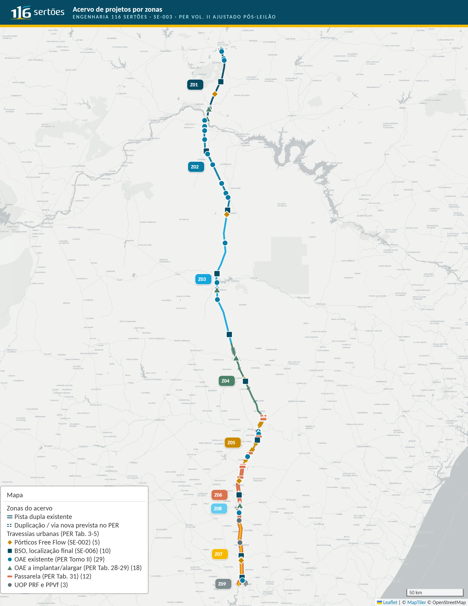
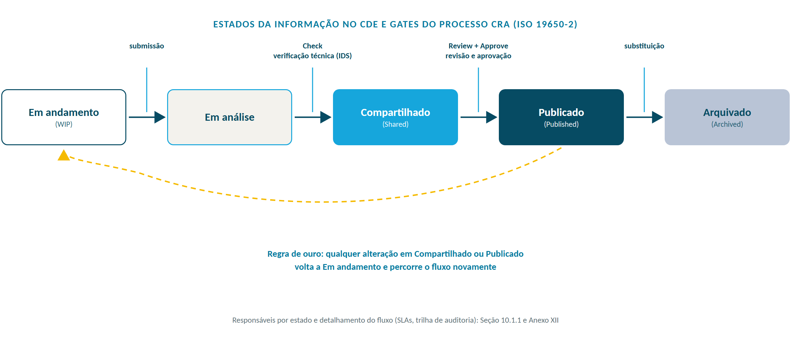
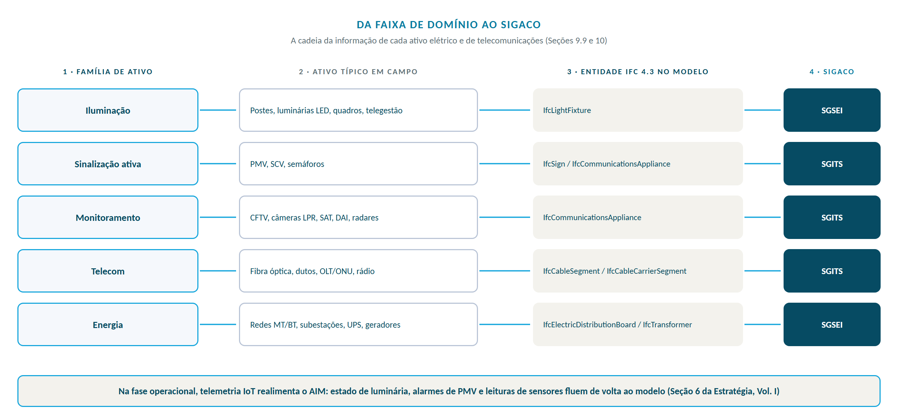
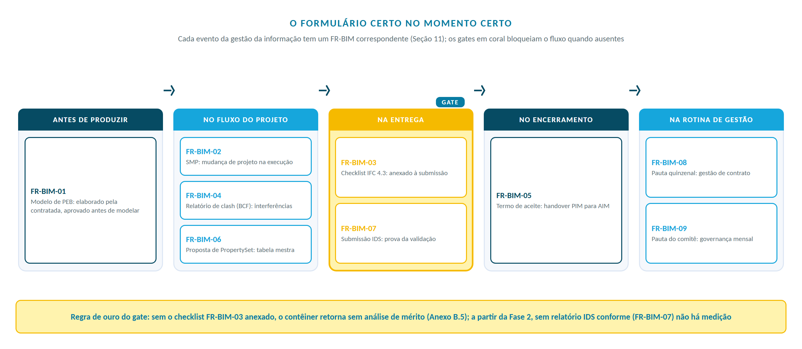

Leia a síntese.
No alto de cada seção, uma frase diz a regra. Quem tem pressa para aí.
Caderno BIM Vol. II · CGI-CCS-01 · R06
CGI-CCS-01 / Caderno BIM / R06 / Outubro/2026
Quem projeta, mede ou mantém a rodovia precisa achar a informação certa na primeira tentativa. Este Caderno combina, entre todos os que participam, onde ela nasce, como se chama e por onde passa.
No alto de cada seção, uma frase diz a regra. Quem tem pressa para aí.
Prazo, código, formato e estado estão no corpo da seção, com número e data.
Modelo, formulário e tabela ficam nos cadernos temáticos A a F, com link no fim.
01 / Arquitetura documental e uso deste Caderno
Este Caderno fica no centro: recebe as decisões da Estratégia BIM e dele saem os cadernos de anexos.
O Caderno BIM (Volume II) fixa as regras de produção, troca e verificação da informação em BIM Nível 2 para toda contratada de projeto, obra ou levantamento da Concessão Rota dos Sertões. As decisões que o fundamentam (objetivos, prazos, roadmap, governança e a Matriz PER × BIM) estão na Estratégia BIM 116 Sertões (Volume I). O detalhe de cada tema está nos cadernos temáticos A a F (Seção 12).

Cada leitor tem um caminho curto; o quadro sugere onde começar e onde aprofundar.
| Se você é... | Comece por... | Aprofunde em... |
|---|---|---|
| Licitante ou projetista | Seções 1, 5 e Anexo C.4 (modelos de PEB) | Seções 6 a 8 |
| Contratada de obras | Seções 1, 7.12 (entregáveis) e 8.6 (gatilho de pagamento) | Seção 9; prazos na Matriz PER × BIM, Seção 9 da Estratégia BIM |
| Serviço de levantamento de campo | Seções 9.2 a 9.4 e Anexo C.4, modelo simplificado | Seção 7.6 e Anexo D.1 (SUE) |
| Fiscal ou gestão de contrato | Seção 11 e formulários FR-BIM-08/09 | Anexo B.5; governança na Seção 7 da Estratégia BIM |
| Órgão fiscalizador ou auditor | Seções 7.3 (comunicação com a ANTT) e 10 (SIGACO) | Anexo B.5; referências normativas na Seção 12 da Estratégia BIM |
Ferramentas on-line. A Central BIM 116 Sertões reúne, no SharePoint, este Caderno, os cadernos de anexos, os modelos de PEB, as tabelas de codificação e a capacitação. O Codificador de Projetos monta o código de arquivo a partir de escolhas em texto (obra, fase, disciplina e tipo de documento) e mostra a pasta do SharePoint onde o arquivo fica (Seção 6.4).
Contratos e RFPs emitidos até 09/10/2026 citam a numeração do Caderno BIM R03. A tabela converte as remissões; o conteúdo não mudou de sentido na passagem para os volumes.
| Caderno BIM R03 | Volumes R00 |
|---|---|
| Seções 1 a 4 (objetivos, roadmap, localização, abrangência) | Estratégia (Vol. I), Seções 2, 5, 3 e 4 |
| Seção 5 (termos) a Seção 12 (condições existentes) | Caderno (Vol. II), Seções 2 a 9, na mesma ordem |
| Seção 13 (gêmeo digital) e 13.2 (SIGACO) | Estratégia, Seção 6; Caderno, Seção 10 |
| Seções 14 (governança e KPIs), 15 (sustentabilidade) e 16 (Matriz PER × BIM) | Estratégia, Seções 7, 8 e 9 |
| Seção 17 (formulários) e 19 (anexos) | Caderno, Seções 11 e 12 |
| Seções 18 (lições e ações) e 20 (referências) | Estratégia, Seções 11 e 12 |
| Anexos 1.1 a 1.5; 2.1 a 2.5; 3.1 a 3.4; 4.1; 5.2 | Anexos A.1 a A.5; B.1 a B.5; C.1 a C.4; D.1; E.2 (o número depois da letra não mudou) |
| Anexo 5.1 (fundamentação BIM Nível 2) | Estratégia, Seção 10 |
A R04 deste Caderno (16/10/2026) substitui os tramos e os segmentos do acervo pela árvore Zona > TH > Obrigação, com o km SNV 202607A como referência; os IDs de obrigação da lista mestre não mudaram. A R05 (21/10/2026) passa o km SNV ao método da proposta OF-ENG-001/2026 REV02 (SE-010); os códigos CCS da BR-116/BA mudam no bloco 3 e a lista mestre R07 guarda o código anterior como de-para. A R06 (26/10/2026) inclui o modelo padrão da Planilha de Quantidades do Projeto (Anexo A.2.6 e Seção 7.12) e alinha o código 5D do Anexo A.2.6 à Seção 5.9.
02 / Termos e definições
Contratante e Concessionária designam, neste documento, a mesma entidade, a Concessionária 116 Sertões S.A.: usa-se Contratante nos atos contratuais e de definição de requisitos, e Concessionária no regime operacional da concessão. Contratada designa qualquer pessoa jurídica contratada para projetos, obras, levantamentos ou serviços sujeitos a este Caderno. Os demais termos seguem as definições abaixo e, no que não as contradisserem, as normas da Seção 12 da Estratégia BIM.
BIM Nível 2: Regime colaborativo adotado como linha de base: equipes disciplinares independentes produzem modelos próprios, federados em um CDE, com requisitos formalizados (EIR) e troca por padrões abertos (IFC, BCF, IDS). Fundamentação: Seção 10 da Estratégia BIM.
Código de arquivo CCS: Identificador único do contêiner de informação: sigla CCS e níveis 2 a 5 da Portaria SUROD 12/2025, mais categoria, disciplina, sequencial e revisão (Seção 6.4). Zona, TH e obrigação ficam na pasta e nos metadados (Seção 6.6); a classificação ABNT NBR 15965 fica em PropertySet.
Zona, TH e obrigação: Níveis de localização do acervo de projetos: zona = pacote de um squad de projetistas (Z01 a Z09 e Z00 Geral), formada por TH inteiros; TH = trecho homogêneo do PER (Tabela 43) e unidade de entrega de projetos à ANTT, com pasta Ano-TH; obrigação = item do PER, com tipo de obra POP 12, código CCS e pasta próprios (Seção 6.6; Anexo A.1).
Estados da informação e gates (CRA): Condições pelas quais todo contêiner circula no CDE, com verificação (Check), revisão (Review) e aprovação (Approve) por papéis independentes (Seção 7.1.1; detalhe no Anexo B.5).
PropertySets CRS: Conjuntos de propriedades corporativos, prefixo CRS-, obrigatórios nos modelos IFC 4.3 (grupos A a E e famílias por ativo; Anexo A.2).
Fases de projeto: A apresentação à ANTT segue os tipos da Portaria SUROD 12/2025 (EVT, FUN, ANT, EXE ou EXO, ASB). O conteúdo técnico segue as Diretrizes Básicas do DNIT (IPR 726): o EVTEA segue o Escopo Básico EB-101; o projeto funcional e o anteprojeto equivalem, em grau de detalhe, à fase preliminar e à fase de projeto básico; o projeto executivo (EXE ou EXO) equivale à fase de projeto executivo. Os escopos básicos (EB) e as instruções de serviço (IS) do IPR 726 definem o conteúdo mínimo de cada disciplina.
IDS (na prática deste Caderno): Instrumento de aprovação técnica por validação automatizada e, a partir da Fase 2 do roadmap, gatilho de liberação de pagamento (Seção 8).
03 / Atribuições e responsabilidades
As responsabilidades abaixo complementam, e não substituem, as obrigações contratuais estabelecidas entre a Contratante e cada contratada.
A organização dos papéis abaixo segue a ISO 19650-2. A designação formal dos responsáveis ocorre no PEB pós-contratual de cada empreendimento.
| Papel (ISO 19650) | Responsabilidade principal |
|---|---|
| Information Manager (Gestor da Informação) | Estabelecer e manter os processos de gestão da informação, o CDE e a conformidade com o EIR. |
| Task Information Manager | Coordenar a informação de uma tarefa/disciplina específica dentro do projeto. |
| Task Team Manager | Responsável pela entrega da informação de uma tarefa/disciplina, incluindo prazos e qualidade. |
| BIM Coordinator | Coordenar a modelagem multidisciplinar, a federação e a análise de interferências (clash detection). |
| Asset Information Manager | Manter o AIM na fase operacional, conforme as AIR e integrado ao SIGACO. |
04 / Requisito de informação da organização (OIR)
A organização pede pouco e pede sempre o mesmo: informação que sirva à operação por trinta anos.
Os Requisitos de Informação da Organização (OIR) descrevem a operação e a estratégia da concessionária e fixam os objetivos do BIM, a metodologia de trabalho e os critérios de medição e avaliação. Eles alinham as equipes ao modo de operação da organização, para que as decisões estratégicas se apoiem em informação clara e rastreável.
A hierarquia completa de requisitos, da estratégia ao plano de entrega, está resumida na Figura 2 e perpassa as Seções 4 a 7 e o Anexo C.4.

A Concessão Rota dos Sertões, Lote 02, outorgada à Concessionária 116 Sertões S.A. (sociedade de propósito específico da Nova Infra Invest), abrange as rodovias BR-116 nos estados de Pernambuco e Bahia e BR-324 na Bahia, totalizando extensão aproximada de 502,0 quilômetros, outorgada pela União, por intermédio da ANTT, no âmbito do Edital de Concessão nº 1/2026. Território, ativos e principais obras: Seção 3 da Estratégia BIM. Certificações de gestão e compromissos socioambientais: Seção 8 da Estratégia BIM.
A gestão da informação usa duas plataformas corporativas complementares: o CDE, dedicado a modelos, federação e comentários georreferenciados (BCF), e a plataforma documental, para memoriais, relatórios, quantitativos e correspondência formal. Os projetistas são inseridos no CDE após a reunião de início, com acesso à pasta do projeto e sincronização para trabalho local; os modelos são desenvolvidos diretamente no CDE. Detalhes de estados, fluxos e plataformas: Seção 7.1.
A reunião de início (kick-off), presencial ou por videoconferência, alinha documentos de referência, fluxo de análise, cronograma, marcos e responsabilidades, e orienta a elaboração do PEB contratual conforme o Anexo C.4, que também define a declaração de experiência em BIM exigida da contratada. Cadência completa de reuniões: Seção 7.2.
Durante a elaboração do projeto, os trâmites de alteração são registrados no CDE por ambas as partes. Necessidades identificadas pela contratada seguem o formulário de Solicitação de Mudança de Projeto (SMP, FR-BIM-02), anexado ao apontamento; a Concessionária avalia impactos de prazo, custo e manutenção e responde em até 10 (dez) dias úteis.
Definido o que a organização precisa, o corte seguinte é por empreendimento: é o PIR que abre a Seção 5.
05 / Requisito de informação do projeto (PIR)
O projeto responde ao OIR com modelos, usos e um fluxo que todos os squads seguem do mesmo jeito.
O Requisito de Informação do Projeto (PIR) estabelece as diretrizes essenciais para a gestão eficiente do projeto e do ativo, fundamentais para embasar decisões estratégicas do empreendimento. Este capítulo detalha e exemplifica como a Contratada deve desenvolver seu PEB, orientando as metodologias a serem adotadas no projeto, desde os requisitos mínimos de modelagem BIM até o uso efetivo do BIM, a análise de interferências e demais aspectos críticos. Os modelos de PEB a serem utilizados pelas contratadas, nas fases de licitação e de execução contratual, constam do Anexo C.4.
Identificação do projeto (código CCS, localização, contrato, tipo de intervenção), escopo, cronograma padrão, equipes, organograma, matriz RACI e requisito de treinamento compõem o PEB conforme os modelos do Anexo C.4; os contatos vigentes da Concessionária e o cronograma padrão estão no CDE. Etapas não aplicáveis são inativadas, nunca excluídas, e novos escopos seguem a EAP definida.
A tabela de Requisitos Mínimos de Modelagem BIM, disponibilizada pela Contratante no CDE, apresenta as entidades essenciais para modelagem em cada fase do projeto, associadas a classificações IFC 4.3 e aos níveis de necessidade de informação (LOIN). Conforme a natureza específica do projeto, o conteúdo desta tabela pode ser ajustado ou expandido. É obrigatório modelar todos os elementos geométricos que contribuam para a geração de quantitativos, visto que estes serão obtidos diretamente do modelo BIM.
A tabela geral a seguir apresenta os usos do BIM definidos pela Concessionária. As descrições detalhadas e os objetivos de cada uso são disponibilizados no CDE.
| Uso do BIM | Fase predominante | Disciplinas envolvidas |
|---|---|---|
| Modelagem das condições existentes | Pré-projeto / Estudos | Topografia, Geotecnia, Utilidades |
| Análise de localização | Estudos e funcional | Geometria, Meio Ambiente, Desapropriação |
| Autoria do projeto (design authoring) | Funcional → Executivo | Todas |
| Coordenação multidisciplinar | Funcional → Executivo | Todas |
| Revisão do projeto | Funcional → Executivo | Todas |
| Análise de interferências (clash detection) | Funcional → Executivo | Todas |
| Extração de quantitativos | Funcional → Executivo | Todas |
| Orçamento associado ao modelo (5D) | Executivo | Todas |
| Planejamento e acompanhamento de obra (4D) | Executivo | Obras |
| Modelagem para construção (MAC) | Execução | Obras |
| Controle de obra | Execução | Obras |
| Entrega As Built digital | Encerramento | Todas |
| Gestão do ativo (AIM → SIGACO) | Operação | Gestão de Ativos |
| Manutenção preventiva | Operação | Conservação e Gestão de Ativos |
A tabela cobre os 11 usos BIM mínimos do BIM Mandate (Rev01, item 5.1), com os prazos de implantação da Seção 7.3. O PD-BIM traz a matriz de agentes responsáveis por uso e indica o Gerente de Informação BIM da concessão (item 5.2), papel exercido pelo Information Manager da Seção 3.3.
Como camada organizadora, a taxonomia internacional de propósitos de uso do processo BIM (gerar, analisar, coletar, comunicar e materializar informações) orienta o encadeamento entre disciplinas e a definição do nível de necessidade de informação de cada modelo; a versão detalhada está disponível no CDE.
A Contratada deve detalhar seu fluxo de trabalho em BIM, alinhando-o com os usos do BIM especificados neste Caderno, descrevendo claramente a metodologia adotada e apresentando um fluxograma. Deve indicar a estratégia de federação do modelo multidisciplinar e o fluxo de trabalho por disciplina para a produção e modelagem do projeto. No regime de BIM Nível 2, cada disciplina mantém a autoria do seu modelo; a federação combina os modelos disciplinares para coordenação e detecção de interferências, sem fundir as fontes de dados.
A Contratada deve apresentar sua estratégia para a análise de interferências, incluindo a matriz de interferência que descreve as interações entre as disciplinas do projeto. Deve especificar como os relatórios de interferência são apresentados no CDE (formato BCF), assegurando a comunicação eficaz dos potenciais conflitos. A análise deve abranger interferências com ativos existentes (condições existentes, utilidades subterrâneas e estruturas elétricas/telecom na faixa de domínio, ver Seção 9).
A EAP do modelo segue a localização do acervo de projetos: zona, TH e obrigação (Seção 6.6) e, dentro da obrigação, eixo projetado, disciplina, etapa e fase construtiva. A classificação ABNT NBR 15965 (Seção 6) é uma camada de propriedade do elemento, não um nível da EAP.
| Campo | Formato | Exemplo | Camada NBR 15965 |
|---|---|---|---|
| Zona | Z + 2 números (Z00 = geral) | Z05 | Tabela 4U, Unidades |
| TH | TH + 2 números, com ano-âncora na pasta | TH20 (pasta A05-TH20) | Tabela 4U, Unidades |
| Obrigação | tipo de obra POP 12 + 2 números | DPL02, PAS03, BSO07 | Tabela 4A, Espaços |
| Eixo projetado | PS/PN/MN/MS/TR | PN (pista norte) | n/a |
| Disciplina | 3 letras (Anexo A.3) | HDR | Tabela 3P, Processos |
| Etapa (na disciplina) | 2 números | 02 | n/a |
| Fase de construção | P01/P02/P03... | P02 | Tabela 3R, Resultados |
| Classificação do elemento | propriedade | 3E-21 30 00 | Tabela 3E, Elementos |
A estrutura completa, com exemplos por disciplina e família de elemento, está no Anexo A.3 e no CDE.
Exigir e planejar só funciona quando todos falam a mesma língua: a Seção 6 fixa essa linguagem.
06 / Classificação da informação (ABNT NBR 15965)
Um arquivo sem código é um arquivo perdido. Aqui está a gramática que dá nome a cada entrega.
A ABNT NBR 15965, Sistema de classificação da informação da construção, é a norma brasileira que estabelece uma estrutura comum para classificar a informação da construção, fundamentada na ABNT NBR ISO 12006-2. É a base normativa adotada pela Concessionária para garantir rastreabilidade, interoperabilidade e consistência semântica entre modelos, documentos, quantitativos e o sistema de gestão de ativos (SIGACO).
A ABNT NBR 15965 é à construção civil o que o SIRGAS 2000 é à cartografia: um referencial comum que permite que diferentes agentes falem a mesma língua ao longo do ciclo de vida do ativo.
A NBR 15965 é a implementação brasileira do framework da ABNT NBR ISO 12006-2 (equivalente ao OmniClass norte-americano e ao Uniclass britânico), em sete partes, compatível com o SINAPI.
A tabela a seguir mapeia as principais tabelas da ABNT NBR 15965 ao escopo da Concessão Rota dos Sertões, indicando exemplos de elementos rodoviários em cada uma.
| Tabela NBR 15965 | Escopo | Exemplos rodoviários |
|---|---|---|
| 2C, Produtos (recursos) | Produtos e insumos empregados na construção. | Concreto, asfalto, sinalização vertical, tinta, aço. |
| 2N, Funções | Função desempenhada pelo ativo/elemento. | Drenar, iluminar, sinalizar, suportar carga. |
| 2Q, Equipamentos | Equipamentos e componentes discretos. | Bombas, geradores, câmeras (CFTV), PMV, SCV. |
| 3E, Elementos | Elementos físicos da obra (estrutura, revestimento). | Pavimento, OAE, barreira metálica, muro de arrimo, duto. |
| 3P, Processos | Fases e atividades da construção. | Terraplenagem, pavimentação, instalação elétrica. |
| 3R, Resultados dos trabalhos | Resultados (produtos finais) por etapa. | Faixa adicional pronta, OAE entregue, passarela instalada. |
| 4U / 4A, Unidades e espaços | Unidades de uso e espaços funcionais. | Praça de pedágio, base operacional, PPD, faixa de domínio. |
| Grupo 5, Informação | Documentos e informação técnica. | Memorial descritivo, relatório de inspeção, IFC. |
A concessão usa dois códigos, com os mesmos cinco primeiros blocos. O código ANTT, definido no Anexo da Portaria SUROD 12/2025 (itens 1.1.1 a 1.1.7), identifica o projeto nas capas dos volumes e nomeia os arquivos protocolados. O código de arquivo CCS, interno, nomeia todo contêiner no CDE (prancha, memorial, modelo, planilha) e acrescenta categoria e disciplina em três letras, que o gerador de código (Anexo A.3) converte para as siglas ANTT na montagem do protocolo.
| Bloco | Código ANTT (Portaria SUROD 12/2025) | Código de arquivo CCS | Exemplo |
|---|---|---|---|
| 1 Concessionária | 3 letras, definidas pela GEENG | igual | CCS |
| 2 Rodovia + UF | 3 números + 2 letras | igual | 116BA |
| 3 Localização | km inicial-km final (trecho) ou km+metros (pontual), no km SNV 202607A | igual | 279-323 / 088+150 |
| 4 Tipo de obra | 3 letras, tabela 1.1.3 | igual | DPL / MON |
| 5 Tipo de projeto | 3 letras, tabela 1.1.4 | igual | EXO / OUT |
| 6 Classe / categoria | 2 letras, tabela 1.1.5 | 3 letras (MEM, PRC, MOD, REL, PLQ...) | DE / PRC |
| 7 Disciplina | 2 caracteres, tabela 1.1.6 | 3 letras (GEO, HDR, PAV, STR, TGT...) | H2 / HDR |
| 8 Sequencial | 3 números | 3 números ou H + número do TH (modelos) | 006 / H20 |
| 9 Revisão | R + 2 números | igual | R02 |
Exemplo completo (prancha de drenagem do projeto executivo da duplicação Tucano-Araci):
Código ANTT: CCS-116BA-279-323-DPL-EXO-DE-H2-006-R02 · Código CCS: CCS-116BA-279-323-DPL-EXO-PRC-HDR-006-R02 · Localização (obrigação Z05-DPL02): BR-116/BA km SNV 278,517 a 322,491 / km PER 279,240 a 323,340 (provisório)

Regras: zona, TH e obrigação não entram no nome (ficam na pasta e nos metadados); o bloco 3 usa o km SNV 202607A da obrigação inteira; no código CCS interno, modelos BIM usam H + número do TH no bloco 8 (H20); o arquivo de modelo enviado à ANTT recebe o nome ANTT de 31 dígitos, com sequencial numérico (BIM Mandate Rev01, item 5.4), é cadastrado no módulo de Projetos do Sigicor e, se extenso, segue por FTP (Portaria SUROD 12/2025, art. 6º, § 2º); a classe ANTT de modelo não consta da tabela 1.1.5 e está pendente de definição pela GEENG; trecho dentro do mesmo km usa o km final arredondado para cima (2,290 a 2,720 = 002-003); a classificação ABNT NBR 15965 fica em PropertySet e coluna, nunca no nome; o nome não tem espaços, acentos nem pontos além da extensão; a revisão só avança na emissão (R00, R01...), a versão é controlada pela plataforma; a Portaria SUINF 28/2019 está revogada e não é referência de codificação. A sigla CCS aguarda confirmação da GEENG (art. 8º, parágrafo único). O Ofício Circular nº 1989/2023/GEENG/SUROD/DIR-ANTT (codificação de projetos em BIM, 09/10/2023, SEI 18939122) está vigente, segundo a relação do Ofício Circular SEI nº 986/2025/SUROD/DIR-ANTT, mas o teor não está publicado no portal da ANTT; obtido pelo SEI, a regra de nome de modelo se ajusta ao que ele definir.
O bloco 3 usa o km SNV 202607A, nos códigos ANTT e CCS (SE-008, 17/10/2026), pelo método da proposta OF-ENG-001/2026 REV02 (SE-010, 21/10/2026). O km do PER vigente (Vol. II ajustado pós-leilão) vai nos metadados do contêiner (Seção 6.7) como correlação provisória até a resposta da ANTT ao ofício, porque o PER será revisado para compatibilizar os marcos e a diferença entre os dois referenciais chega a cerca de 0,6 km na BR-116/BA.
Codificador de Projetos. Para não montar o código à mão, use o Codificador de Projetos 116 Sertões, publicado na Central BIM 116 Sertões. O projetista escolhe, em texto, a obra da lista mestre (ou informa rodovia e km do PER), a fase, a disciplina, o tipo de documento, o número e a revisão. O codificador devolve o código CCS do arquivo, o nome ANTT para protocolo, o identificador ANTT, a localização em km PER e km SNV 202607A, os metadados do contêiner e o caminho da pasta no site da zona (Seção 6.7), com link para abri-la. Ele usa as mesmas tabelas do gerador do Anexo A.3 e as convenções desta seção; em divergência, valem este Caderno e o Anexo A.3.
Serviços que não são projeto, como inspeção, monitoração e cadastro de ativo existente, não têm tipo de projeto próprio na tabela 1.1.4. Para eles vale a convenção abaixo, confirmada pela Gestão da Informação em 04/10/2026 e registrada no gerador de código (Anexo A.3).
| Produto | Bloco 4 | Bloco 5 | Exemplo (Ponte do Rio Pitombeira, BR-116/PE km SNV 29,011 / km PER 29,113, provisório) |
|---|---|---|---|
| Relatório de inspeção ou de cadastro de ativo existente | MON | OUT | CCS-116PE-029+011-MON-OUT-REL-STR-001-R00 |
| Boletim de monitoração (classe ANTT RM) | MON | OUT | CCS-116PE-029+011-MON-OUT-REL-STR-003-R00 |
| Diretriz básica de recuperação de OAE | OAE | OUT | CCS-116PE-029+011-OAE-OUT-PRC-STR-001-R00 |
| Projeto de recuperação ou reforço (executivo) | OAE | EXO ou EXE | conforme a regra geral desta seção |
O uso de OUT para produtos da própria Concessionária é convenção provisória: a tabela 1.1.4 reserva OUT a outros interessados que não são terceiros. A convenção segue para confirmação da GEENG junto com a sigla CCS (art. 8º, parágrafo único).
Conteúdo técnico: a inspeção (MON + OUT) segue a Norma DNIT 010/2004-PRO, ou a norma que a substituir, como exige o PER Vol. I (item 3.1.3), e o Manual de Inspeção de Pontes Rodoviárias (IPR 709); a diretriz básica de recuperação (OAE + OUT) segue a IS-223 do IPR 726 (avaliação de OAE existente); o projeto de OAE nova, de recuperação ou de reforço (OAE + EXO ou EXE) segue a IS-214 do IPR 726.
A tabela abaixo exemplifica a classificação NBR 15965 e a entidade IFC 4.3 de elementos típicos das disciplinas de uma obra rodoviária; o código vai no PropertySet CRS-A-Inf_Ger_Proj. A planilha completa está no CDE.
| Disciplina | Elemento | Código NBR 15965 | Entidade IFC 4.3 |
|---|---|---|---|
| Geometria | Alinhamento horizontal | 3E-... | IfcAlignment |
| Pavimento | Camada de revestimento | 3E-21 30 00 | IfcCourse / IfcPavement |
| Terraplenagem | Aterro | 3E-... | IfcEarthworksFill |
| Drenagem | Boca-de-lobo | 3E-... | IfcDistributionChamberElement |
| Drenagem | Tubo corrugado | 3E-... | IfcPipeSegment |
| OAE | Tabuleiro de ponte | 3E-... | IfcSlab (IfcBridge) |
| Sinalização | Placa de regulamentação | 2Q-... | IfcSign |
| Iluminação | Luminária LED | 2Q-... | IfcLightFixture |
| ITS / SCV | Painel de mensagem variável | 2Q-... | IfcSign / IfcCommunicationsAppliance |
| Telecom | Fibra óptica (duto) | 3E-... | IfcCableCarrierSegment |
| Utilidades | Gasoduto enterrado | 3E-... | IfcPipeSegment (IfcDistributionSystem: GAS) |
A SE-003 (03/10/2026, revisada em 05/10/2026) divide a concessão em sete zonas na BR-116, de Salgueiro a Feira de Santana, duas zonas de contorno (Z08 Contorno de Serrinha, via nova em pista dupla; Z09 BR-324/BA, anel de Feira de Santana, contorno leste, com obras do DNIT em curso), mais a zona Z00 Geral para projetos de toda a extensão (cadastro inicial e SIG, sinalização, pavimento, ITS e telecom, sistema Free Flow, CCO, estoque de melhorias e obras emergenciais). Cada zona é o pacote de projetos de um squad: escritório multidisciplinar de infraestrutura, contrato de sondagens, especialista em OAE e especialista em geotecnia e contenções. A zona reúne trechos homogêneos (TH) inteiros do PER Vol. II (Tabela 43), e o TH é a unidade de entrega de projetos à ANTT, com pasta Ano-TH (o ano-âncora é o da obra mais cedo). Dentro do TH, cada obrigação do PER tem a sua pasta, com o tipo de obra da Portaria SUROD 12/2025 e o código CCS próprio. A obrigação que cruza o limite de TH vira partes (.1, .2), uma em cada TH, e todas usam o código da obrigação inteira. O ano de projeto, como metadado, é o ano de obra do PER menos dois.
| Zona | Trecho (km SNV 202607A) | km PER (provisório) | Nome | Anos de obra | Obrigações | Edificações |
|---|---|---|---|---|---|---|
| Z01 | BR-116/PE 25,600 a 91,500 | 25,700 a 91,860 | Salgueiro-Ibó (PE) | 2º, 3º | 34 | BSO 01; pórtico P5; UOP PRF km SNV 81,858 / km PER 82,000 (provisório) |
| Z02 | BR-116/BA 0,330 a 74,860 | 0,000 a 74,530 | Ibó-Chorrochó | 2º, 8º | 16 | BSO 02 |
| Z03 | BR-116/BA 74,860 a 219,030 | 74,530 a 218,550 | Macururé-Canudos-Euclides da Cunha | 2º, 6º, 7º, 8º | 38 | BSO 03; pórtico P4; BSO 04; BSO 05 |
| Z04 | BR-116/BA 219,030 a 275,960 | 218,550 a 275,520 | Quijingue-Tucano norte | 2º, 6º | 47 | pórtico P3; BSO 06; PPD (sem TH) |
| Z05 | BR-116/BA 275,960 a 322,980 | 275,520 a 322,480 | Tucano-Araci | 2º, 5º, 6º | 46 | BSO 07 |
| Z06 | BR-116/BA 322,980 a 370,620 | 322,480 a 370,130 | Teofilândia-Serrinha | 2º, 4º, 5º | 39 | pórtico P2; BSO 08 |
| Z07 | BR-116/BA 370,650 a 429,400 | 370,130 a 428,930 | Serrinha-Feira de Santana | 2º, 3º, 4º | 16 | UOP PRF km SNV 372,159 / km PER 370,300 (provisório); PPVf km SNV 391,274 / km PER 390,000 (provisório); BSO 09; pórtico P1; BSO 10 |
| Z08 | Contorno de Serrinha 0,000 a 7,110 (via nova, fora do SNV 202607A) | 0,000 a 7,110 | Contorno de Serrinha | 4º | 7 | - |
| Z09 | BR-324/BA 513,590 a 520,465 | 512,500 a 519,338 | BR-324 anel de Feira de Santana (contorno leste, obras do DNIT) | 3º | 1 | - |
| Z00 | todas | - | Geral | 1º a 8º | 2 | escritório ANTT; CCO |
Os itens do Contorno de Serrinha (PER Tab. 11, 17, 18 e 29) formam a zona Z08, no TH Contorno, e os da BR-324, a zona Z09. A lista mestre Lista_Mestre_Obras_Zonas_R07.xlsx (237 obrigações em 254 linhas, 42 TH) e o KMZ oficial das zonas são os produtos de referência; as tabelas de TH e de travessias urbanas estão no Anexo A.1.
Quilometragem: o km de referência é o SNV 202607A do DNIT, pelo método da proposta OF-ENG-001/2026 REV02 (SE-010, 21/10/2026): projeção da coordenada no eixo vetorial SNV e distância geodésica acumulada desde a origem, sem reescala cadastral; obrigações, lotes de acessos, travessias e TH que constam da proposta levam o km do seu Anexo III. O km do PER (Vol. II ajustado pós-leilão, Tabela 1) acompanha cada documento como correlação provisória, até a resposta da ANTT ao ofício; o desvio entre os dois referenciais chega a cerca de 0,6 km na BR-116/BA e, na BR-324, o SNV corre em sentido contrário ao do PER.
Trechos homogêneos: a lista mestre traz, para cada TH (Tabela 43, com código SNV, extensão, pista e pavimento), a zona, a pasta Ano-TH, os km SNV e PER e as obrigações; o KMZ e o mapa interativo das zonas, as páginas dos sites de zona e o campo TH do CDE usam a mesma correlação. Z01 cobre TH_01 a TH_06; Z02, TH_07 a TH_10; Z03, TH_11 a TH_13; Z04, TH_14 a TH_18; Z05, TH_19 a TH_20; Z06, TH_21 a TH_24; Z07, TH_25 a TH_36; Z08, o TH Contorno; Z09, TH_44 a TH_40. A tabela completa está no Anexo A.1.

Zonas do acervo de projetos (SE-003), captura do mapa interativo publicado nos sites Engenharia 116 Sertões, Central BIM e sites de zona (Leaflet sobre base MapTiler Positron, identidade 116 Sertões; fonte GEN.116S - 04 Gis/01_Mapas/Mapa_Zonas_Acervo_SE003_interativo_20261003.html). No mapa on-line, cada zona traz km SNV e km PER (provisório); pontos: pórticos Free Flow, BSO, OAE, passarelas, PPVf e UOP PRF.
Cada zona é um site SharePoint próprio (Eng116-Zxx), ligado ao site Engenharia 116 Sertões pela navegação, com as mesmas bibliotecas: 00 GESTAO (atas, apresentações, cronograma, PEB, contratos do squad), 01 DADOS DE ENTRADA (topografia, sondagens, cadastro, SIG, extratos do PER, interferências), 02 CDE-INFR, 03 CDE-EDIF, 04 PROTOCOLOS ANTT, 05 MIDIA e 06 ORCAMENTO 5D. Dentro do CDE a profundidade é de cinco níveis, para manter o caminho sincronizado no Windows abaixo de 260 caracteres, e os sites das zonas têm título curto (Z07 SER-FSA):
| Nível | Pasta | Exemplo |
|---|---|---|
| 1 | Ano-âncora + TH (edificações: EDIF) | A05-TH20 |
| 2 | Obrigação do PER (ID da lista mestre; parte .1, .2 no limite de TH) | Z05-DPL02.1 |
| 3 | Tipo de projeto (nível 5 ANTT) | EXO (também EVT, FUN, ANT, EXE, ASB) |
| 4 | Disciplina CCS (o contrato do squad responde por disciplina) | HDR |
| 5 | Categoria (último nível; _OBSOLETO aqui) | PRC, MEM, MOD, PLQ |
Os estados da informação (Seção 7.1.1) são coluna e fluxo de aprovação, não pasta. Metadados obrigatórios de cada contêiner: zona, TH, obrigação, rodovia/UF, km inicial e final no SNV-DNIT 202607A e no PER (provisório), município, trecho SNV, trecho homogêneo (TH, Tabela 43 do PER Vol. II), ano de obra, ano de projeto, tipo de obra, tipo de projeto, classe e disciplina ANTT, categoria e disciplina CCS, contrato originador, estado, revisão, código ANTT, classificação NBR 15965, processo SEI da obra (um por obra, do estudo ao termo de encerramento, Portaria SUROD nº 12/2025, art. 39), número SEI do documento protocolado, item do PER, identificador do registro no Sigicor e código SNV inicial e final com a versão (IN ANTT nº 38/2025, art. 12). Com eles, as visões por ano, por disciplina, por estado e por pendência de protocolo saem de filtros, sem duplicar pastas. Detalhes e correspondência com a ISO 19650-2: Anexo A.1.
Nomeado cada elemento, resta reger sua circulação: é o EIR, na Seção 7.
07 / Requisito de troca de informação (EIR)
Trocar informação é um processo com estados, gates e prazos. O CDE é onde isso acontece.
O Requisito de Troca de Informação (EIR) define como a informação é gerida e trocada no projeto: formatos de arquivo, responsabilidades e documentos. Este capítulo abrange a comunicação com o órgão regulador, a segurança da informação, o uso do Ambiente Comum de Dados (CDE), os padrões de apresentação, o controle de qualidade, além das especificações de software e hardware necessárias.
O Ambiente Comum de Dados (CDE) é a fonte única de verdade do projeto, onde são centralizados os modelos, projetos de autoria, bibliotecas e modelos federados. A Concessionária adota como CDE a plataforma
O CDE é o instrumento central do BIM Nível 2: no regime colaborativo da ISO 19650-1, a colaboração estruturada entre disciplinas e a rastreabilidade dos estados da informação dependem de um ambiente único e controlado. A Concessionária mantém um CDE dedicado a modelos e informação geométrica, complementado por plataforma corporativa de gestão documental para memoriais, relatórios, planilhas de quantitativos e correspondência formal. A escolha das ferramentas é objeto de avaliação técnica e econômica própria, sendo este Caderno neutro quanto a fornecedores.
No regime de BIM Nível 2, o contêiner de informação é tratado como evento, e não como objeto: cada submissão, revisão ou mudança de estado dispara um fluxo de trabalho definido, com papéis, prazos e decisões registradas. A anatomia desses fluxos, o processo CRA de verificação, revisão e aprovação e os padrões adotados pela Concessão estão detalhados no Anexo B.5.
Cada projeto contará com estruturas organizacionais próprias, separando infraestrutura e edificações, com permissões de acesso configuradas por papel (gestor da informação, time de disciplina, leitor). O acesso é aberto por padrão: toda pasta de projeto é legível pelos papéis inscritos no contrato, e a restrição decorre apenas da classificação de segurança da informação e do estado Em Andamento, reservado à equipe autora. Fechar sem classificação que justifique é exceção a justificar, não o normal do fluxo.
A norma ISO 19650 define os estados da informação possíveis para todas as informações gerenciadas no CDE. Toda informação deve estar em um, e apenas um, desses estados:
| Estado | Responsável | Condição de uso |
|---|---|---|
| Em andamento (WIP) | Equipe autora | Acesso restrito à equipe autora; não deve ser usado em coordenação. |
| Em análise | Contratada → Concessionária | Aguardando avaliação; não autorizado para uso por terceiros. |
| Compartilhado (Shared) | Equipe autora / Aprovado | Disponível às equipes de projeto; pode ser usado em coordenação. |
| Publicado (Published) | Concessionária | Aprovado após controle de qualidade; pronto para detalhamento e uso em obra. |
| Arquivado (Archived) | CDE | Substituído por versão mais recente; somente leitura, preservado para histórico. |
A Figura 4 resume a máquina de estados e os gates do processo CRA, incluindo a regra de ouro do item seguinte.
Regra de ouro: qualquer alteração em arquivo Compartilhado ou Publicado deve reverter o estado para “Em andamento”, percorrendo novamente o fluxo de análise, com a mudança comunicada no CDE.
A comunicação operacional entre as partes deve ser conduzida por meio de grupo corporativo de mensageria, complementada por e-mail para comunicações formais. Todo registro de ocorrências técnicas deve ser documentado no CDE (comentários georreferenciados / BCF). Reuniões extras podem ser convocadas pela Concessionária para alinhar premissas relevantes. A cadência mínima é a seguinte:
| Reunião | Propósito | Cadência | Participantes |
|---|---|---|---|
| Reunião de início (kick-off) | Alinhar escopo, requisitos e PEB contratual | Uma por contrato | Contratante, contratada, gestores |
| Acompanhamento individual | Dúvidas de requisito, remoção de bloqueios, premissas | Quinzenal | Gestor da informação, coordenador da contratada |
| Coordenação multidisciplinar | Federação, interferências e apontamentos BCF | Por ciclo de federação | Coordenadores por disciplina |
| Análise de submissão (CRA) | Verificação, revisão e aprovação de contêineres | Por submissão | Papéis do fluxo (Anexo B.5) |
| Comitê de Gestão da Informação | KPIs, exceções, evolução do roadmap | Mensal | Comitê (Seção 7.1 da Estratégia BIM) |
A comunicação com o Poder Concedente (ANTT) é feita pela Concessionária por meio do setor Regulatório. Os arquivos desenvolvidos pela Contratada devem ser apresentados ao setor de Projetos da Concessionária, que realizará a análise crítica. Caso haja objeção, os apontamentos são registrados no CDE.
Em caso de não objeção interna, o setor de Projetos, com o setor Regulatório, protocola os estudos e projetos no SEI, em formato editável e PDF; arquivos extensos vão por FTP (Portaria SUROD nº 12/2025, art. 6º). A GEENG conclui a análise como aceito, aceito com ressalvas ou não aceito (art. 29), no prazo do art. 38 da Resolução ANTT nº 6.000/2022. Para obras do PER, a ANTT manifesta não objeção ao anteprojeto e recebe o projeto executivo, que é condição para o início da obra (Contrato, cl. 7.2). O projeto executivo só é recebido com o certificado de inspeção emitido pelo Verificador, organismo acreditado (cl. 7.11 e 7.11.1), que confere a aderência do projeto ao PD-BIM aceito pela ANTT (IN ANTT nº 19/2023, art. 20) e recebe acesso de leitura aos contêineres publicados no CDE. A não objeção e o recebimento não transferem responsabilidade técnica à ANTT (cl. 7.9.1).
Sigicor. A Instrução Normativa ANTT nº 38/2025 torna obrigatório o Sistema de Gestão de Investimentos de Concessões Rodoviárias (Sigicor) para cadastro dos investimentos do PER, dos projetos de todas as fases (inclusive recuperação e manutenção), do planejamento anual, das autorizações de início, do eventograma, do avanço físico mensal e do encerramento. Cada projeto protocolado no SEI é cadastrado pelo setor Regulatório no módulo de Projetos do Sigicor, com o número do processo SEI e o item do PER, e o CDE guarda o identificador do registro. O CDE não substitui o protocolo no SEI nem o cadastro no Sigicor (BIM Mandate Rev01, item 5.4). O SIGACO, sistema de gestão de ativos da Concessionária (PER Vol. I, item 4.10), é outro destino e recebe o AIM (Seção 10).
O PD-BIM, o BIM Mandate e o cronograma mínimo de implantação do BIM estão na Seção 9.1 da Estratégia BIM.
Estações de trabalho do projeto são isoladas de usos pessoais. A segurança da informação segue a abordagem orientada à segurança da ISO 19650-5 e a política corporativa da Contratante: controle de acesso por papel no CDE, criptografia em repouso e em trânsito, classificação da informação (público, interno, confidencial), registro de acessos e plano de resposta a incidentes. Os processos de estudos e projetos no SEI da ANTT são públicos (Portaria SUROD nº 12/2025, art. 35): todo contêiner que segue para protocolo recebe a classificação público antes da emissão, e a Gestão da Informação retira dele dados pessoais e informações sensíveis de segurança operacional que a ANTT não exija (Lei nº 13.709/2018, LGPD).
No desenvolvimento do projeto, a Contratada deve utilizar os templates e bibliotecas fornecidos pela Contratante no CDE. Recursos desenvolvidos pela Contratada, uma vez integrados ao projeto, passam a ser propriedade intelectual da Contratante. É obrigatório que, na fase de planejamento inicial, a Contratada detalhe no PEB pré-contratual quais templates e bibliotecas utiliza, assegurando a continuidade do projeto nas etapas futuras do ciclo de vida e a cessão gratuita à ANTT prevista na cl. 42.1 do Contrato de Concessão.
Sistema geodésico: SIRGAS 2000 (EPSG:4674), referencial oficial do Sistema Geodésico Brasileiro (Decreto 5.334/2005 e IBGE), com projeção UTM no fuso correspondente à área do projeto. Para a Concessão Rota dos Sertões, aplicam-se os fusos 23L, 24L e 25L conforme o trecho.
A apresentação e a codificação de documentos seguem a Portaria SUROD 12/2025 (redação consolidada com as Portarias SUROD 15/2025 e 122/2025), que revogou a Portaria SUINF 28/2019: volumes por tipo de estudo ou projeto (art. 7º), documentos obrigatórios de cada protocolo (art. 7º, § 2º: declaração de veracidade, guia de remessa, caderno de respostas na reapresentação, check-list de atendimento ao PER com página do volume, justificativas de alteração quando houver, ART e, em obras não previstas no PER, tabela resumo do orçamento e declaração de responsabilidade por serviços, quantitativos e custos), codificação (Anexo, item 1.1), extensões aceitas (item 1.1.8) e planejamento anual de envio de projetos (art. 37). O código de arquivo CCS (Seção 6.4) complementa o padrão ANTT; o detalhe está nos Anexos A.3 (gerador de código) e A.4 (volumes e protocolo).
Para cumprir os requisitos de controle de qualidade, alinhados às diretrizes da ISO 9001 e da ISO 19650-2, a Contratada deve implementar, no mínimo, os seguintes procedimentos:
| Procedimento | Objetivo |
|---|---|
| Validação em pares (peer review) | Avaliação colaborativa do trabalho pelos especialistas. |
| Inspeção visual | Assegurar ausência de componentes não planejados e fidelidade à intenção do projeto. |
| Clash detection | Identificação e resolução de conflitos entre componentes do projeto. |
| Verificação de padrões | Adesão aos padrões do Caderno (fontes, estilos de linha, camadas, NBR 15965). |
| Verificação de integridade | Garantir ausência de elementos indefinidos, incorretos ou duplicados. |
| Validação IFC / IDS | Conformidade do modelo exportado com os requisitos de informação (openBIM). |
| Validação de quantitativos | Conferência dos quantitativos extraídos do modelo vs. planilha orçamentária. |
A Contratada deve detalhar no PEB pré-contratual como realiza o controle para cada item, incluindo metodologia, ferramentas, periodicidade e participantes.
Os Tipos de Informação (TDI) estruturam-se em PropertySets (tabela TDI no CDE); o Nível de Necessidade de Informação (LOIN) define, por elemento e fase, a informação necessária (ISO 19650-1). PropertySets essenciais adicionais são propostos pela contratada via PEB ou FR-BIM-06; grandezas espaciais seguem a NBR ISO 80000-3 (L, B, H).
IFC 4.3 (ISO 16739-1:2024): os projetistas devem adotar a classificação IFC 4.3 para infraestrutura, incluindo as entidades IfcRoad, IfcAlignment, IfcPavement, IfcBridge, IfcCourse, IfcEarthworksFill, IfcSign, IfcDistributionSystem, entre outras. A classificação, uma vez estabelecida, permanece inalterada ao longo do ciclo de vida dos objetos. O IFC 4.3 atende à exigência de IFC 4 ou superior do BIM Mandate (item 5.4). Como a MVD Coordination View 2.0 citada no Mandate foi definida para o IFC 2x3, o PD-BIM informa à ANTT a MVD adotada para o IFC 4.3.
Modelo federado: o modelo federado, representando o projeto multidisciplinar, deve ser elaborado conforme as diretrizes deste Caderno, com aplicação de cores, camadas e materiais especificados na lista disponível no CDE. Caso o material necessário não esteja presente na lista, a Contratada deve submeter proposta, a ser definida em colaboração com a Concessionária.
A Contratada deve especificar todos os softwares utilizados, organizados por disciplina, incluindo plugins e desenvolvimentos internos. Os softwares escolhidos devem ser capazes de atender aos requisitos dos entregáveis e permitir a extração de arquivos no formato IFC 4.3, assegurando a interoperabilidade e a compatibilidade com os padrões openBIM.
A Contratada deve declarar que dispõe de hardware que atende às especificações técnicas recomendadas pelo fabricante dos softwares selecionados para o projeto.
A Contratada deve fornecer, no mínimo, os entregáveis conforme os tipos de arquivo elencados na tabela de entregáveis disponível no CDE, incluindo bibliotecas e templates quando aplicável. Os prazos de entrega estão consolidados na Matriz PER × BIM (Seção 9 da Estratégia BIM).
| Tipo de entregável | Formatos |
|---|---|
| Modelos BIM (por disciplina) | Formato nativo de software certificado pela buildingSMART + IFC 4.3 |
| Modelo federado | IFC 4.3; NWD quando a federação for feita em software Autodesk (BIM Mandate Rev01, item 5.4) |
| Documentos textuais | Formato nativo editável + PDF |
| Planilhas de quantitativos | Formato nativo editável, no modelo padrão de PQ (Anexo A.2.6) + PDF |
| Desenhos técnicos | Formato nativo CAD + PDF + DXF |
| Alinhamentos | Nativo + XML (LandXML) + IFC 4.3 |
| Relatórios de clash detection | BCF + PDF |
| Modelo As Built | Formato nativo + IFC 4.3 + modelo federado IFC |
Trocar com regras pede prova objetiva de atendimento: essa prova é o IDS, Seção 8.
08 / IDS, análise automatizada de modelos BIM
O IDS transforma exigência em verificação automática: o modelo passa ou não passa.
BIM como processo, não como produto. A Concessão Rota dos Sertões enxerga o BIM como um processo contínuo de projeto e gestão da informação, e não como um produto final entregue em arquivo. O modelo BIM amadurece progressivamente ao longo do ciclo de vida do ativo, sustentando decisões em cada etapa, desde a concepção até a reabilitação. Essa visão processual orienta todos os pré-requisitos de informação definidos neste Caderno.
A Information Delivery Specification (IDS) é um padrão aberto da buildingSMART International, aprovado como padrão final em sua versão 1.0 (junho de 2024), que define os requisitos de entrega de informação de modelos BIM em formato interpretável por máquina, serializado em XML. O IDS operacionaliza o conceito de Nível de Necessidade de Informação (LOIN) da ISO 19650-1, traduzindo os Requisitos de Troca de Informação (EIR) em regras verificáveis automaticamente contra arquivos IFC, inclusive o IFC 4.3 para infraestrutura rodoviária.
Em síntese, o IDS transforma o que se espera de um modelo em testes objetivos. Em vez de checklist manual e inspeção visual, a Contratada entrega o modelo IFC e a Contratante aplica o arquivo IDS correspondente, obtendo um relatório automático de conformidade (passou ou não passou, por entidade e por requisito).
IDS é ao EIR o que o IFC é ao modelo: o formato aberto que torna a exigência técnica computável, auditável e independente de software proprietário.
Um arquivo IDS é composto por especificações (specs). Cada especificação tem um bloco de aplicabilidade (a quais entidades IFC se aplica) e um bloco de requisitos (o que deve ser verdadeiro). As regras combinam facets (facetas) com lógica all ou any:
| Faceta (facet) | O que verifica | Exemplo de uso CRS |
|---|---|---|
| Entity | Tipo da entidade IFC (IfcRoad, IfcCourse, IfcSign, etc.) | Aplicar regra a todas as camadas de pavimento |
| Classification | Código de classificação referenciado (NBR 15965, bSDD) | Exigir que cada OAE tenha código 3E NBR 15965 |
| Property | Valor de um PropertySet (obrigatório, faixa, lista) | Exigir CRS-D-Esp_Tec.Material preenchido em camadas de pavimento |
| Material | Material associado (IfcMaterial) | Verificar associação de CBUQ na camada de revestimento |
| Attribute | Atributo nativo da entidade IFC | Verificar IfcAlignment.Name conforme padrão de estaqueamento |
| PartOf / Applicability | Relacionamento e pertinência | Garantir que todo IfcSign esteja associado a um IfcRoad |
A cardinalidade (all ou any) permite expressar tanto regras restritivas (todos os elementos devem atender) quanto regras alternativas (ao menos uma condição). Cada requisito pode ter instruções de severidade (mandatory ou recommended).
A estratégia IDS da Concessionária conecta três camadas normativas que incidem sobre os modelos BIM da concessão. O IDS é o ponto de convergência que torna essas três camadas verificáveis em uma única operação automatizada.
| Camada normativa | Exigência verificável via IDS | Exemplo de regra IDS |
|---|---|---|
| Pré-requisitos CRS (modelagem, 4D, 5D) | Presença de PropertySets CRS-A a CRS-E (Anexo A.2); código 5D preenchido; associação a etapas construtivas para 4D; composição SINAPI/SICRO para 5D. | Toda IfcCourse deve ter CRS-E-EAP.Codigo5D e CRS-E-EAP.ComposicaoSINAPI. |
| Requisitos da ANTT (Resolução ANTT 6.000/2022, art. 23; BIM Mandate aprovado pela Decisão SUROD 737/2025; Portaria SUROD 12/2025) | Nome de arquivo no padrão ANTT de 31 dígitos (Portaria SUROD 12/2025, Anexo, item 1.1.7), volumes do art. 7º, georreferenciamento em SIRGAS 2000 e entrega em IFC 4 ou superior (BIM Mandate, item 5.4). | Todo IfcAlignment traz o código de arquivo CCS (Seção 6.4) no PropertySet de identificação e IfcMapConversion para SIRGAS 2000. |
| Normas técnicas de classificação (ABNT NBR 15965 e NBR ISO 12006-2) | Presença de código de classificação NBR 15965 (tabelas 2C, 3E, 3R, 4U) em todos os elementos quantificáveis, com referência ao bSDD quando aplicável. | Todo IfcPipeSegment deve ter ClassificationReference à tabela 3E da NBR 15965. |
Os pré-requisitos não são estáticos: amadurecem com o ativo, e o IDS evolui junto. O encadeamento por etapa (concepção, detalhamento, análise, orçamento, planejamento 4D, contratação, supervisão, operação e reabilitação) é o próprio arco deste Caderno, das Seções 9 e 10; a matriz de requisitos por etapa está no CDE.
O IDS só produz valor sobre quatro pilares: políticas (este Caderno, Comitê, EIR), processos (FR-BIM-07 e FR-BIM-03, fluxo de SMP), pessoas (papéis e trilha da Seção 7.3 da Estratégia BIM) e tecnologias (validador e verificador neutros quanto a fornecedor, no CDE).
A adoção do IDS é progressiva e alinhada ao Roadmap de Maturidade BIM CRS (Seção 5 da Estratégia BIM). Em vez de implantar todas as validações de uma vez, a Concessionária estabelece etapas que evoluem do simples ao complexo, permitindo aprendizado interno, capacitação da cadeia de fornecedores e calibração das regras. A Figura 2 da Estratégia BIM (Seção 5 da Estratégia BIM) consolida as Fases IDS e os Estágios CRS no mesmo horizonte temporal.
| Fase IDS | Horizonte | Escopo de validação automatizada | Gatilho de pagamento |
|---|---|---|---|
| Fase 0, Piloto interno | Ano 1 | IDS de validação básica em um projeto piloto: presença de alinhamento, georreferenciamento SIRGAS 2000 e entidades IFC 4.3 mínimas. | Sem vínculo contratual; aprendizado interno. |
| Fase 1, Validação técnica obrigatória | Ano 1 a 2 | IDS aplicado a todas as entregas de projeto executivo: PropertySets CRS-A a CRS-E obrigatórios, classificação NBR 15965, formatos IFC 4.3 e XML. | Aprovação técnica do modelo condiciona aceite da entrega. |
| Fase 2, Aprovação interna integrada | Ano 2 a 3 | IDS expandido para 4D (etapas construtivas e vínculo ao cronograma) e 5D (composições SINAPI/SICRO e quantitativos). | Relatório IDS verde é pré-requisito para liberação de pagamento de projeto. |
| Fase 3, Pagamento baseado em modelo | Ano 3 a 4 | Medição de obras por extração do modelo (5D) verificada por IDS; As Built progressivo validado etapa a etapa. | Pagamento de medição de obras lastreado em quantitativos validados por IDS. |
| Fase 4, Ciclo de vida integrado | Ano 4 em diante | IDS conectado ao AIM e ao SIGACO, com handover automatizado e validação contínua na operação. | Pagamento de contratos de manutenção vinculado à condição do ativo no SIGACO, medida com as escalas e periodicidades dos Relatórios de Monitoração do PER (item 4.4) e registrada nos PropertySets CRS-AIR. |
A passagem de uma fase para a seguinte não é automática: depende de critérios de prontidão que avaliam a maturidade da Concessionária e da cadeia para a tarefa específica da fase seguinte, e não uma maturidade genérica. A avaliação é formalizada pelo Comitê de Gestão da Informação, com evidências registradas no CDE.
| Transição | Critérios de prontidão (maturidade para a tarefa) | Evidência exigida |
|---|---|---|
| Fase 0 para Fase 1 | Ferramenta validadora homologada no padrão buildingSMART; Validador IDS designado e capacitado; biblioteca IDS da CRS publicada no CDE. | Ata de homologação e trilha de capacitação |
| Fase 1 para Fase 2 | Aprovação IDS em ao menos 90% das entregas por 3 meses consecutivos; pré-validação na origem praticada por todas as contratadas ativas; ao menos 1 BIM Coordinator capacitado por contratada. | Relatórios IDS no CDE; lista de capacitados |
| Fase 2 para Fase 3 | Relatório IDS conforme em 100% das entregas de projeto executivo; medição 5D piloto validada contra planilha contratual; condutores dos KPIs publicados no SIG. | RETOF do período; relatório do piloto 5D |
| Fase 3 para Fase 4 | AIM alimentando os 10 subsistemas do SIGACO; telemetria IoT em produção em ao menos uma frente; nenhum checklist manual equivalente remanescente no fluxo. | Inventário SIGACO; registro de integração |
A aprovação interna de modelos pela Concessionária segue fluxo padronizado, com validação automatizada IDS como etapa central. O fluxo substitui gradualmente a inspeção manual e cria rastreabilidade objetiva entre a entrega e a decisão de aceite.
A partir da Fase 2 do roadmap, o relatório IDS passa a condicionar a liberação de pagamento a fornecedores de estudos, projetos e levantamentos de campo. O modelo BIM deixa de ser mero entregável técnico e passa a ter valor contratual direto, como instrumento de medição.
| Tipo de contratação | Gatilho de pagamento tradicional | Gatilho IDS (a partir da Fase 2) |
|---|---|---|
| Estudos (EVTEA, funcional) | Entrega de memoriais e plantas em PDF + aceite por inspeção visual. | Modelo IFC 4.3 validado por IDS (CRS-A, CRS-B, CRS-C obrigatórios). |
| Projetos (funcional, executivo) | Protocolo de volumes e aceite da ANTT. | Modelo validado por IDS com PropertySets CRS-A a CRS-E completos, classificação NBR 15965 e código 5D. |
| Levantamentos de campo (topografia, SUE, elétrica) | Relatório técnico + plantas + nuvem de pontos. | Modelo de condições existentes validado por IDS específico (CRS-C de georreferenciamento e CRS-PST-Utilidade para SUE). |
| Medição de obras (Fase 3 em diante) | Planilhas de quantitativos manuais e diário de obras. | Quantitativos extraídos do modelo e validados por IDS 5D; etapas concluídas verificadas no 4D. |
Como referência de mercado para contratações de projeto, admite-se a decomposição da medição por entregável, com pesos por item de medição. A tabela a seguir apresenta um modelo de referência; os percentuais efetivos são definidos em cada contratação, documentados no PEB e no MIDP do contrato (Anexo C.4), e cada parcela somente é liberada com o contêiner no estado de informação exigido.
| Item de medição | Peso de referência | Condição de liberação |
|---|---|---|
| Análises preliminares e estudos de alternativas | 10% | Estudos aprovados no CDE |
| Entrega dos modelos BIM em formato nativo e IFC | 20% | Modelos validados por IDS (Check) |
| Aprovação na coordenação por disciplina | 10% | Verificação por disciplina sem pendências |
| Aprovação na coordenação multidisciplinar | 10% | Apontamentos BCF encerrados |
| Aprovação na extração de quantidades | 20% | Planilha de quantidades validada contra o modelo |
| Geração de entregáveis 2D a partir dos modelos | 30% | Pranchas emitidas e revisadas a partir do modelo |
Para projetos de grande vulto com entregas parciais, acordam-se proporções por pacote, com o estado de informação de cada pacote definido nos documentos contratuais, na forma do Anexo B.5.
Princípio: sem IDS verde, não há pagamento. O relatório IDS conforme é pré-requisito formal e auditable para a liberação de qualquer medição de projeto, estudo ou levantamento vinculado a modelo BIM, a partir do horizonte definido no roadmap.
A Concessionária define requisitos funcionais, não marcas. Este Caderno é neutro quanto a fornecedores: qualquer ferramenta que atenda aos requisitos e aos padrões abertos (IFC, BCF e IDS) é admissível. O ambiente de validação IDS é composto por:
Responsabilidades e capacitação por papel no fluxo IDS seguem a trilha da Seção 7.3 da Estratégia BIM; o registro de cada validação usa o FR-BIM-07.
Tudo o que foi exigido até aqui pressupõe conhecer o que já existe: é onde a Seção 9 começa.
09 / Modelagem das condições existentes
A rodovia já existe. Modelar o que está lá é o primeiro trabalho de qualquer projeto novo.
A Modelagem de Condições Existentes é a captura e representação digital do estado físico atual do ativo antes (ou independentemente de) uma intervenção de projeto. Em infraestrutura rodoviária, abrange o leito estrutural, pavimento, dispositivos de drenagem, obras de arte, sinalização, dispositivos de segurança, geomorfologia da faixa de domínio e utilidades existentes.
A ISO 19650 distingue os modelos conforme a fase do ativo:
Em uma concessão rodoviária que opera sobre rodovia existente, o AIM da rodovia já existe (ou deve existir) antes do PIM da intervenção. Ao final da obra, o PIM do alargamento alimenta e atualiza o AIM (handover). Essa inversão do fluxo clássico é a realidade operacional da concessão.
A Figura 5 contrasta o fluxo clássico de entrega de ativos novos com o ciclo contínuo da concessão sobre rodovia existente.

Diferença importante: o As Built representa o que foi efetivamente construído (referenciado a um contrato/projeto executivo), enquanto o modelo de condições existentes é mais amplo e inclui ativos não documentados originalmente.
A captura das condições existentes deve combinar, conforme aplicável:
| Método | Aplicação típica | Norma de referência |
|---|---|---|
| LiDAR aerotransportado | Faixa larga, MDT/MDS, faixa de domínio | NBR 13133; IBGE |
| MMS (Mobile Mapping System) | Inventário ao longo do eixo (preferencial) | NBR 13133 |
| TLS (escaneamento laser terrestre) | Singularidades: OAE, interseções, praças | GSA BIM Guide 03 |
| SLAM | Ambientes sem GNSS: túneis, passarelas cobertas | — |
| Fotogrametria por VANT/drone | Faixa de domínio, volumes, croqui | NBR 13133 |
| Apoio de campo | Poligonais e RNs amarrados à RBC/RGB | NBR 14166; IBGE |
Os levantamentos que baseiam a modelagem das condições existentes atendem, no mínimo, a:
As investigações geotécnicas integram o modelo das condições existentes do subsolo e atendem, no mínimo, a:
O LOIN para ativos existentes deve ser definido por elemento, derivado das AIR, considerando:
O Cadastro Inicial (PER Vol. I, item 4.3, até o 12º mês) e o SIG com recobrimento aerofotogramétrico (item 4.9, até o 12º mês) constituem a base primária da Modelagem de Condições Existentes; a contratada parte desses insumos, disponíveis no CDE, e os complementa quando necessário. O cadastro de ativo existente feito para estudo ou projeto segue o Escopo Básico EB-116 Cadastramento Rodoviário (IPR 726), com fichas de cadastramento quilômetro a quilômetro e fases preliminar e definitiva. O produto é codificado como MON + OUT (Seção 6.4) e, depois de aceito, atualiza o AIM.
Nenhuma obra começa sem conhecer as utilidades enterradas: a investigação segue a prática SUE (ASCE/UESI/CI 38-22, complementada pela PAS 128:2022 e pela ABNT NBR 15935:2011) e classifica cada ativo do nível QL-D ao QL-A. Os níveis de qualidade, as utilidades típicas da faixa de domínio, o fluxo de trabalho e a representação em IFC 4.3 estão consolidados no Anexo D.1, arquivo independente que acompanha este Caderno.
As estruturas elétricas e de telecomunicações que ocupam a faixa de domínio da concessão são, em sua maioria, bens reversíveis dos subsistemas SGSEI (Sistemas Elétricos e Iluminação) e SGITS (Equipamentos de ITS, inclusive a rede de comunicação) do SIGACO. Redes de terceiros autorizadas por TAP são cadastradas no SGF (Faixa de Domínio). Sua correta modelagem é essencial para a operação integrada e a evolução para Gêmeo Digital (Seção 6 da Estratégia BIM).
A Figura 6 consolida o inventário por família de ativo, a entidade IFC 4.3 de representação e o subsistema SIGACO de destino, com a telemetria realimentando o AIM na fase operacional.

A concessionária rodoviária consome energia (praças, iluminação, ITS) e, em muitos casos, hospeda na faixa de domínio redes da concessionária de energia em regime de compartilhamento (Termo de Autorização de Passagem). Deve-se coordenar:
Do campo à operação, o destino final da informação é o SIGACO e o Gêmeo Digital: Seção 10 e Seção 6 da Estratégia BIM.
10 / Destino da informação: SIGACO
O modelo entregue vira ativo gerido. O SIGACO é onde a informação segue viva depois da obra.
O SIGACO (PER Vol. I, item 4.10) é exigido pela ANTT com 10 subsistemas, inventário, modelos de desempenho e certificação ISO 55001, em três fases (Tabela 4): Plano de Gestão de Ativos (até 9 meses), Inventário Inicial (até 12 meses) e Implantação dos Subsistemas (até 24 meses), contados do início da concessão.
O SIGACO é o destino final da informação produzida pelo BIM. Cada subsistema corresponde a uma família de ativos cujos dados geométricos e atributivos são provenientes do AIM. A integração AIM ↔ SIGACO é feita via APIs, com o AIM como fonte de verdade geométrica/atributiva. Todo levantamento, inspeção e intervenção registrado no AIM é publicado no Banco de Dados de Ativos do SIGACO, com consulta em tempo real pela ANTT (PER Vol. I, item 4.10.3; Contrato, cl. 15.3.1). Formato e periodicidade seguem os Relatórios de Monitoração (item 4.4). O módulo de telemetria dos equipamentos, com o painel de disponibilidade, integra o SIGACO (item 3.4.12).
| Subsistema SIGACO (PER Vol. I, item 4.10.4) | Família de ativos | Alimentação BIM |
|---|---|---|
| A. SGP (Pavimentos) | Pavimento flexível e rígido | IfcPavement / IfcCourse |
| B. SGS (Sinalização) | Sinalização vertical, aérea e horizontal; tachas e tachões; defensas, barreiras e atenuadores | IfcSign + CRS-PST-Seguranca |
| C. SGOAE (OAEs) | Pontes, viadutos, passagens e passarelas | IfcBridge / IfcSlab |
| D. SGOAC (OACs) | Bueiros, galerias, sarjetas, valetas, descidas, caixas e drenos | IfcPipeSegment / IfcKerb / IfcDistributionFlowSegment |
| E. SGTEC (Terraplenos e Estruturas de Contenção) | Cortes, aterros, taludes, muros, gabiões e cortinas atirantadas | IfcEarthworksCut / IfcEarthworksFill / IfcRetainingWall / IfcGeotechnicalElement |
| F. SGF (Faixas de Domínio) | Faixa de domínio, ocupações e dispositivos | IfcGeographicElement |
| G. SGE (Edificações e Instalações Operacionais) | Bases operacionais, CCO, SAU, postos de pesagem, edificações de apoio e instalações prediais | IfcBuilding / IfcSpace |
| H. SGSEI (Sistemas Elétricos e Iluminação) | Iluminação, energia, geradores | IfcLightFixture / IfcTransformer |
| I. SGOST (Operação e Segurança de Túneis) | Não há túnel no Sistema Rodoviário do Lote 02 (PER Vol. II, item 3.4.9: não previsto) | sem ativos |
| J. SGITS (Equipamentos de ITS) | PMV, SCV, CFTV, DAI, SAT, SMM, rede de comunicação (fibra, rádio, armários) e telemetria | IfcSign / IfcCommunicationsAppliance / IfcCableSegment + séries temporais |
O SGOST é mantido no SIGACO por exigência do PER, sem ativos enquanto não houver túnel no Sistema Rodoviário. O prazo de 24 meses da Fase 3 do SIGACO é contratual e não depende do estágio de maturidade BIM. A integração AIM ↔ SIGACO por API é progressiva (Estágios 3 e 4); até ela, a carga dos subsistemas usa exportação estruturada do AIM (IFC 4.3 e planilhas por subsistema).
Reversão e transição final: ao final do contrato, a Concessionária transfere à ANTT o Banco de Dados dos Ativos, com inspeções, material associado e modelos de desempenho (PER Vol. I, item 4.10.4). O AIM sustenta o inventário de Bens da Concessão do encerramento e o arrolamento de Bens Reversíveis. Bens identificados que não constem do Termo de Arrolamento e Transferência de Bens são registrados no AIM e apresentados à ANTT assim que identificados (Contrato, cl. 4.2.5).
A estratégia observa os princípios Gemini (CDBB/DFTG): propósito de bem público, confiança por segurança e qualidade dos dados, e função por federação e curadoria.
Os marcos (Inventário 12 meses, subsistemas 24, ISO 55001, gêmeo operacional e federado) acompanham os Estágios CRS da Seção 5 da Estratégia BIM e os prazos da Matriz (Seção 9 da Estratégia BIM).
11 / Formulários
Cada formulário tem um momento certo no ciclo da entrega. Aqui está qual usar e quando.
Os formulários padronizam o que já é obrigação: nenhuma reunião sem pauta, nenhuma submissão sem checklist, nenhuma validação sem registro. A Figura 7 organiza os nove formulários pelo momento em que cada um entra em cena, do PEB antes de produzir ao handover no encerramento.
| Código | Formulário | Uso |
|---|---|---|
| FR-BIM-01 | Plano de Execução BIM (PEB), modelo | Elaborado pela Contratada |
| FR-BIM-02 | Solicitação de Mudança de Projeto (SMP) | Alteração de projeto durante a execução |
| FR-BIM-03 | Checklist de entrega de modelo IFC 4.3 | Controle de qualidade de entregáveis |
| FR-BIM-04 | Relatório de clash detection (BCF) | Análise de interferências |
| FR-BIM-05 | Termo de Aceite de Handover PIM → AIM | Encerramento do empreendimento |
| FR-BIM-06 | Proposta de PropertySet | Inclusão ou alteração na tabela mestra (Anexo A.2) |
| FR-BIM-07 | Submissão IDS | Registro de validação de modelo (Seção 8.5) |
| FR-BIM-08 | Pauta de reunião de acompanhamento quinzenal | Gestão de contrato (Seção 7.2) |
| FR-BIM-09 | Pauta do Comitê de Gestão da Informação | Governança mensal (Seções 7 da Estratégia BIM e 7.2) |

Os formulários estão disponibilizados no CDE, em versão editável, e são atualizados pela área de Gestão da Informação da Concessionária. Os formulários FR-BIM-08 e FR-BIM-09 acompanham este Caderno como arquivos independentes.
12 / Cadernos temáticos de anexos
Cada caderno reúne anexos consultados pela mesma pessoa, na mesma ocasião, e responde a uma pergunta do leitor. A organização segue a lógica temática da Coletânea Guias BIM ABDI-MDIC (2017), adaptada ao ciclo contratual da concessão. O anexo é identificado pela letra do caderno e pelo número (Anexo A.2 = caderno A, segundo anexo); o número preserva o do Caderno BIM R03 (Seção 1.3).
Como a informação é nomeada e estruturada: o código, as propriedades, as bibliotecas e a apresentação física do documento.
| Anexo | Conteúdo | Formato |
|---|---|---|
| Anexo A.1 | Zoneamento do acervo de projetos (SE-003): zonas, TH, obrigações, estrutura de pastas e metadados do CDE; lista mestre e KMZ das zonas | Arquivo independente + xlsx/kmz |
| Anexo A.2 | PropertySets para Concessões Rodoviárias (TDI detalhado) | Arquivo independente |
| Anexo A.3 | Codificação: código ANTT (Portaria SUROD 12/2025) e código de arquivo CCS, tabelas de tipos de obra, tipos de projeto, categorias e disciplinas, exemplos e gerador de código | Arquivo independente + xlsx |
| Anexo A.4 | Padrão de apresentação: volumes por tipo de estudo ou projeto, documentos de protocolo e extensões aceitas (Portaria SUROD 12/2025) | Arquivo independente |
| Anexo A.5 | Lista de materiais e bibliotecas BIM corporativas | CDE |
Como a informação é produzida e circula: requisitos de modelagem, entregáveis, ambientes de autoria e o fluxo no CDE até a aprovação.
| Anexo | Conteúdo | Formato |
|---|---|---|
| Anexo B.1 | Tabela de Requisitos Mínimos de Modelagem BIM por fase | CDE |
| Anexo B.2 | Tabela de entregáveis e formatos | CDE |
| Anexo B.3 | Templates e ambientes de autoria CRS (neutros quanto ao fornecedor) | CDE |
| Anexo B.4 | Fluxograma IFC 4.3 para infraestrutura rodoviária | CDE |
| Anexo B.5 | Fluxo de trabalho documental no CDE e processo CRA (verificação, revisão e aprovação) | Arquivo independente |
Como se contrata e se organiza a execução: exigir no PEB, distribuir responsabilidades no RACI, capacitar as equipes.
| Anexo | Conteúdo | Formato |
|---|---|---|
| Anexo C.1 | Modelo de PEB pré-contratual e pós-contratual (conteúdo consolidado no Anexo C.4) | CDE |
| Anexo C.2 | Matriz RACI de gestão da informação | CDE |
| Anexo C.3 | Plano de capacitação em Engenharia Digital | CDE |
| Anexo C.4 | Modelos de Plano de Execução BIM: pré-contratual (licitação), contratual (pós kick-off) e contratual simplificado (levantamentos de campo) | Arquivo independente |
O terreno como fonte de informação: levantamentos que alimentam a modelagem do existente. Recebe também os temas de campo que crescerem no futuro.
| Anexo | Conteúdo | Formato |
|---|---|---|
| Anexo D.1 | Investigação de ativos enterrados (SUE): níveis de qualidade ASCE 38-22, utilidades típicas, fluxo de trabalho e representação IFC 4.3 | Arquivo independente |
A base comum de leitura: que palavras a documentação usa. A fundamentação do BIM Nível 2, antes Anexo 5.1, passou à Seção 10 da Estratégia BIM.
| Anexo | Conteúdo | Formato |
|---|---|---|
| Anexo E.2 | Glossário de Termos Técnicos, por família temática | Arquivo independente |
O registro de cada evento e as ferramentas de governança: os formulários da Seção 11 e os instrumentos que a sustentam.
| Documento | Conteúdo | Formato |
|---|---|---|
| FR-BIM-01 a FR-BIM-09 | Formulários de PEB, mudança de projeto, checklist IFC, clash, handover, PropertySet, IDS e pautas de reunião (Seção 11) | Arquivos independentes |
| Solicitação de Manifestação Jurídica | Condição de vigência do item B.5.8 (autonomia de fluxo) | Arquivo independente |
| Kit de Capacitação ED-01 a ED-08 | Material didático da trilha por papel (Seção 7.3 da Estratégia, Vol. I) | Arquivo independente |
| Especificação do Painel de Condutores | Contrato de dados do painel de KPIs no SIG (Seção 7.2 da Estratégia, Vol. I) | Arquivo independente |
Os anexos em arquivo independente têm ficha de identificação e revisão próprias, vinculadas a este Caderno, seguem a mesma identidade visual e ficam em pastas por caderno (caderno_A_classificacao a caderno_F_formularios_instrumentos). A versão vigente de cada anexo, inclusive dos mantidos no CDE, prevalece sobre a referência aqui contida.
Fim do Caderno BIM 116 Sertões (Volume Ii) · CGI-CCS-01 · R06 · Outubro/2026
Anexos / cadernos temáticos A a F
Zoneamento (A.1), Property Sets (A.2), Codificação CCS e gerador (A.3), Padrão de apresentação (A.4)
Caderno BFluxo do CDE e CRA (B.5)
Caderno CModelos de PEB (C.4)
Caderno DInvestigação de ativos enterrados, SUE (D.1)
Caderno EGlossário (E.2)
Caderno FFR-BIM-01 a 09, Solicitação Jurídica, Kit de capacitação e Painel de KPIs
O Caderno vale pelo que vira prática: um código em cada arquivo, um estado em cada entrega, um modelo que a operação consegue usar. Dúvida sobre uma regra? A versão oficial em .docx e .pdf decide. Sugestão de melhoria? Registre no log de revisão e fale com a Gestão da Informação.
Esta página reproduz o Caderno BIM CGI-CCS-01 R06. Em divergência, valem o .docx e o .pdf assinados.